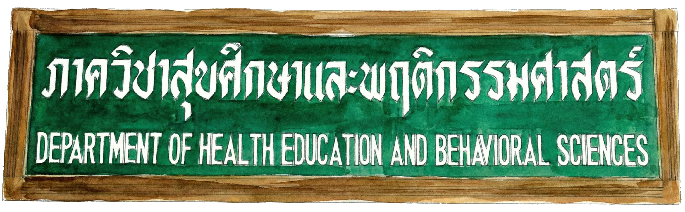
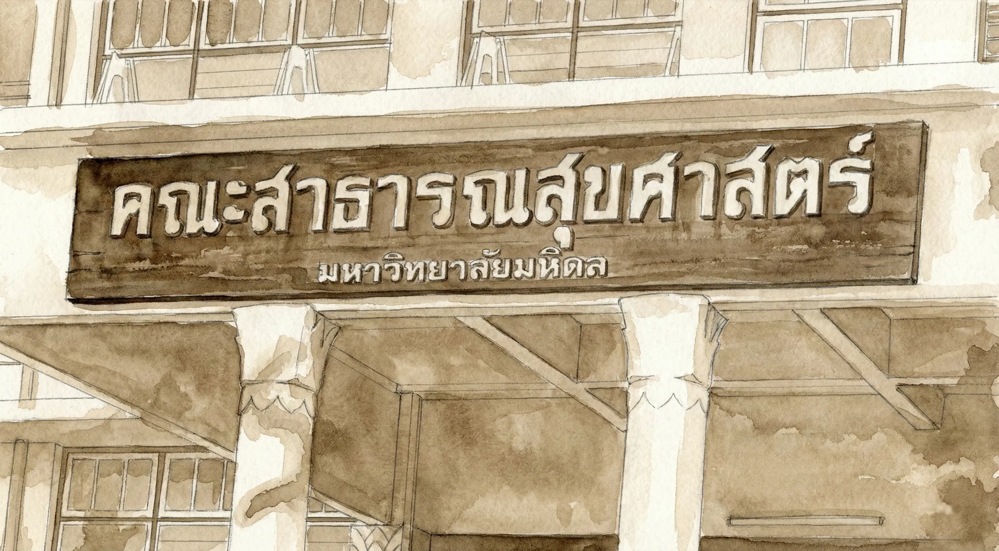
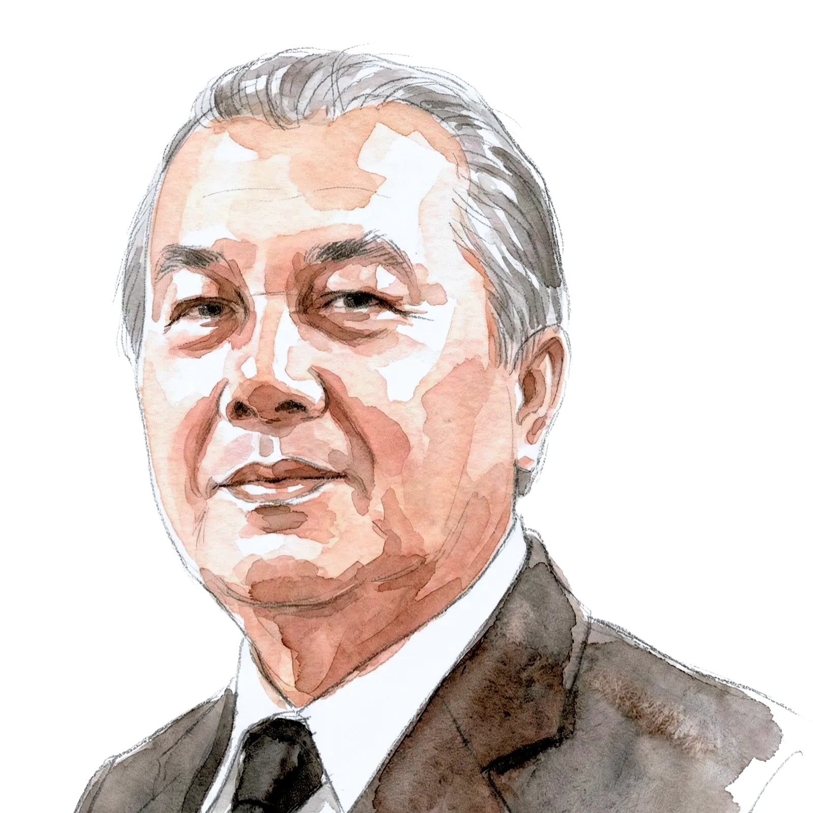

ประวัติภาควิชา

ศาสตราจารย์ นายแพทย์จรัส ยามะรัต
จาก "แผนกสุขศึกษา"
สู่การแก้ปัญหาสาธารณสุข
ภาควิชาสุขศึกษาและพฤติกรรมศาสตร์ ก่อตั้งเมื่อปี พ.ศ. 2508 ในชื่อเดิมว่า
"แผนกสุขศึกษา" เพื่อผลิตนักวิชาการสุขศึกษา
เนื่องจาก ศาสตราจารย์
นายแพทย์จรัส ยามะรัต และ รองศาสตราจารย์
ดร.ยุพา อุดมศักดิ์
ได้ตระหนักว่าการแก้ปัญหาสาธารณสุขของประเทศ
จำเป็นต้องมีนักวิชาการสุขศึกษาเข้าไปปฏิบัติงานในสำนักงานสาธารณสุข โรงพยาบาล และโรงเรียน
เพื่อสนับสนุนการปรับเปลี่ยนพฤติกรรมสุขภาพของประชาชนให้ถูกต้องและยั่งยืน
รองศาสตราจารย์ ดร.ยุพา อุดมศักดิ์
ภารกิจเพื่อ "พื้นที่สีแดง" และ ถิ่นทุรกันดาร
ด้วยปัญหาสุขภาพในชนบทสมัยนั้นมีความรุนแรงมาก รศ.ดร.ยุพา อุดมศักดิ์ จึงกำหนดนโยบาย สนับสนุนข้าราชการที่ปฏิบัติงานในชนบทเป็นพิเศษ โดยเฉพาะในถิ่นทุรกันดารหรือพื้นที่ที่มีผู้ก่อการร้ายคอมมิวนิสต์ (พื้นที่สีแดง) ให้เข้ามาศึกษาต่อในหลักสูตร วิทยาศาสตรบัณฑิต (สุขศึกษา) ซึ่งเปิดสอนเป็นแห่งแรกในไทย เพื่อให้นำความรู้กลับไปพัฒนาสุขภาพประชาชนในท้องถิ่นของตนเองต่อไป

ก้าวสู่ "ภาควิชาสุขศึกษา"
มีการปรับปรุงและแก้ไขพระราชบัญญัติมหาวิทยาลัยแพทยศาสตร์ใหม่เป็น "มหาวิทยาลัยมหิดล" ทำให้แผนกต่างๆ ได้รับการยกฐานะขึ้น ดังนั้น แผนกสุขศึกษาจึงเปลี่ยนชื่อเป็น "ภาควิชาสุขศึกษา" อย่างเป็นทางการ

รองศาสตราจารย์ ดร.สมจิตต์ สุพรรณทัสน์
การผนวกศาสตร์ "พฤติกรรมศาสตร์"
รศ.ดร.สมจิตต์ สุพรรณทัสน์ หัวหน้าภาควิชาในขณะนั้น
เล็งเห็นว่าหลักสูตรเป็นการผสมผสาน 2 ศาสตร์ใหญ่ คือ สุขศึกษาและพฤติกรรมศาสตร์
จึงดำเนินการเปลี่ยนชื่อเป็น "ภาควิชาสุขศึกษาและพฤติกรรมศาสตร์"
โดยผ่านกระบวนการยาวนานกว่า 2 ปี
และได้รับอนุมัติจากคณะรัฐมนตรีเมื่อวันที่
9 พฤศจิกายน 2534
ให้ใช้ชื่อนี้มาจนถึงปัจจุบัน
ภาควิชาในปัจจุบัน
ปัจจุบัน ภาควิชาเปิดสอนหลักสูตรสุขศึกษาและส่งเสริมสุขภาพระดับ ปริญญาตรีและโท มุ่งเน้นสร้างบัณฑิตที่เป็นผู้นำทางวิชาการและการวิจัยเพื่อปรับเปลี่ยนพฤติกรรมสุขภาพ สร้างสิ่งแวดล้อมที่เอื้อต่อสุขภาพ และให้บริการวิชาการแก่หน่วยงานทั้งภาครัฐและเอกชน
ปรัชญา
Philosophy
ปรัชญา (Philosophy)
"จัดการศึกษานำไปสู่การพัฒนาพฤติกรรมสุขภาพและคุณภาพชีวิตของทรัพยากรมนุษย์"
วิสัยทัศน์
Vision
วิสัยทัศน์ (Vision)
"องค์กรแห่งการเรียนรู้ เพื่อพัฒนาวิชาการ และส่งเสริมวิชาชีพสุขศึกษาให้มีคุณภาพได้มาตรฐาน"
พันธกิจ
Mission
พันธกิจ (Mission)
- ผลิตบัณฑิตให้เป็นนักวิชาการที่มีคุณภาพ คุณธรรม และมีสุขภาวะที่เหมาะสมตามมาตรฐานวิชาชีพ
- สร้างองค์ความรู้ที่มีคุณภาพ และชี้แนะนโยบาย บริการวิชาการให้สอดคล้องกับปัญหาและความต้องการของสังคม
- มีระบบการบริหารจัดการที่มีคุณภาพโปร่งใส และตรวจสอบได้
ทำเนียบหัวหน้าภาควิชา
ผู้นำในการขับเคลื่อนภาควิชาตั้งแต่อดีตจนถึงปัจจุบัน